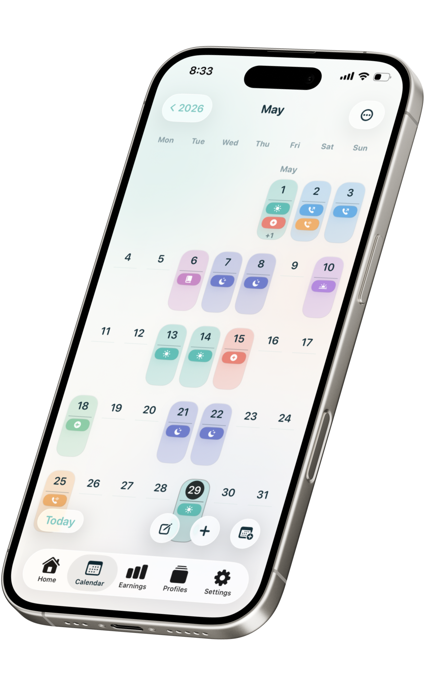
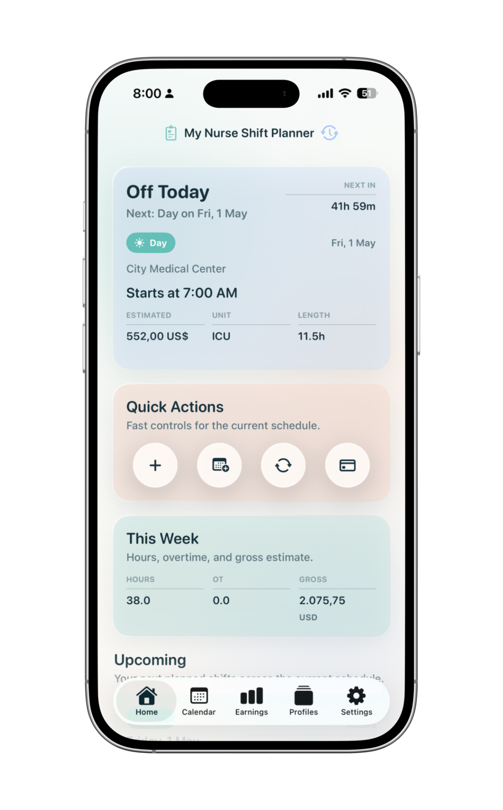
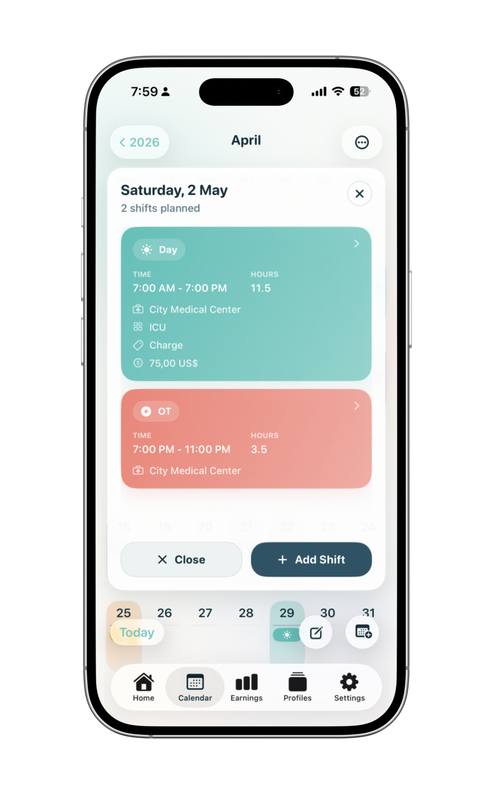

Rotating schedules
Keep recurring work patterns visible without rebuilding the month manually.
A simple shift planning app built for nurses and healthcare staff. Clear daily scheduling, flexible rotation planning, pay visibility, and a private experience designed to stay practical.


The app is designed for the scheduling patterns nurses actually deal with: changing shifts, overnight work, overtime, multiple workplaces, and the need to see a month clearly at a glance.
Keep recurring work patterns visible without rebuilding the month manually.
Track day and night work clearly so upcoming shifts stay easy to spot.
See extra shifts and estimated pay impact without maintaining separate notes.
Use one clean planner instead of scattered messages, screenshots, and memory.
Get a fast overview of what is coming next and plan around real working days.
Focused, professional, and intentionally simple. The app is built to be useful in everyday nursing work, not overloaded with distractions.


Discount codes are available for hospitals, staffing agencies, recruiters, and nursing education programs interested in sharing the app with their staff or students.
My Nurse Shift Planner was created independently by an app development team focused on practical, privacy-friendly mobile apps. The goal is straightforward: build software that helps real users stay organized without unnecessary complexity.
My Nurse Shift Planner is live on the App Store, with a public listing, screenshots, support details, and a direct download link for staff and recruiters to review.
For partnership discussions, healthcare staff discounts, recruiter conversations, support questions, or product inquiries, use the contact details below.